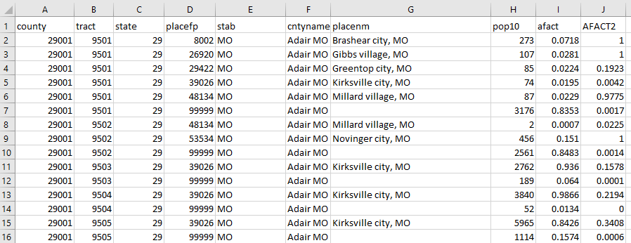

Green Blue Interpolation_Weights
1 A A 0.85
2 A B 0.15
3 B B 0.70
4 B C 0.30Geographic Crosswalks at Urban
What Are Geographic Crosswalks?
Urban researchers often conduct analyses that require the use of data that contain geographic information. What do we do, though, when we have multiple data sources at different geographic levels, such as census tract, zip code, place, or state? What if we have data at one level of geography but do not have data at the geographic level we want represent? And how would we standardize geographies that change spatially over time? (Looking at you census tracts!)
We need a tool to transform data from one spatial level to another. This is a crosswalk! Geographic crosswalks, also called correlation lists, equivalency files, or geographic correspondence files, allow us to approximate data from one geographic level to another.

This image is an example of a geographic crosswalk - from census tract to census place. We will go into more detail later as to how to use this to approximate data at one geographic level from another.
When Do I Need A Crosswalk?
We often use geographic crosswalks when:
- We have multiple data sources at different geographic levels and want to merge those data together by geographic location
- We have data at one level of geography but do not have data at the geographic level we want to represent
- We want to standardize geographies over time
We do not need to use geographic crosswalks when:
Data is available at the geography we need it to be. It is usually much better to download data at the geography you need it than to go through a geographic crosswalk. This can save some steps and reduce error, especially if your data is not nested (more on that later).
We have address data and we would like to add information regarding a geographic boundary. If you have address data, you can do a spatial join instead of using a geographic crosswalk to add geographic information, as long as the geographic data (such as a shapefile) is available. To do so in R, you can use
sf::st_jointo complete this task.
Is My Data Nested?
One of the key things to determine before using a geographic crosswalk is to consider whether the geography of the data you already have is nested within the geography that you would like to have. Your geography is nested if, when aggregating, it completely and neatly fits within the desired geography.
For example, let’s say you have data at the county level, but would like to represent your data at the state level. Counties are nested within states, meaning they completely are encompassed by states and there is complete overlap when aggregating counties to states.

Nested data is important when using geographic crosswalks because it makes the transformation from one geography to another much more simple.
With data that is not nested, we will need to approximate the area that intersects with the geography you are transforming to.

- The Census Bureau releases all data at a series of 27 different geographic levels.
- A key concept is that of nesting. Some census geographies are entirely composed of other census geographies, making aggregation from the smaller to the larger geographic level simple.
- A chart depicting the 27 geographic levels and their relationships to each other can be seen below.

- Note that all census blocks are entirely nested within census block groups, census block groups within census tract, tracts in counties, and counties within states
- Blocks are generally bounded by visible features or boundaries (like roads!).
Background: Blocks, Block Groups, and Tracts in Depth
- Blocks are statistical entities that tend to be small and are bounded by visible features (e.g. roads, streams, railroad tracks) or non-visible features like city boundaries.
- Block groups are generally defined to contain 600-3000 people.
- Census tracts have between 1200 and 8000 people, and often/ideally close to 4000. Census tract boundaries are made to last over time.
- Because of these population limitations, these geographic levels can change over time. Such changes necessitate crosswalks.
TIGER, FIPS Codes and When you do not need to use a Crosswalk:
The Census Bureau releases spatial data outlining census geography in their TIGER/Line Shapefiles.
In the TIGER/Line Shapefiles, each geographic unit (e.g. a census tract or block) has a unique geographic identifier, or GEOID.
GEOIDs have a great naming convention, some of which we outline below.
| Geographic Level | Structure | Number of Digits | Example Area | Example GEOID |
|---|---|---|---|---|
| State | STATE | 2 | Texas | 48 |
| County | STATE + County | 2+3 =5 | Harris County, Texas | 48201 |
| Tract | STATE + COUNTY + TRACT | 2 +3 + 6 = 11 | Tract 2231 in Harris County, Texas | 48201223100 |
| Block Group | STATE + COUNTY + TRACT + BLOCK GROUP | 2+3+6+1 = 12 | Block Group 1 in Census Tract 2231 in Harris County, TX | 482012231001 |
| Block | STATE + COUNTY + TRACT + BLOCK GROUP + BLOCK | 2+3+6+4 = 15 | Block 1050 in Census Tract 2231 in Harris County, TX | 482012231001050 |
Example from The Census
Other geographic levels also follow this scheme, and you can learn more at the link above.
We list these examples because they show how the naming convention makes use of the fact that these geographies nest within each other.
This naming scheme means that you do not need a crosswalk to simply aggregate from smaller to larger levels of geography if working with data all at the same geographic scale.
Instead, you simply need to:
- Create a new column in your dataframe with the GEOID truncated to the new geographic level.
- Group by and summarize the data using the higher geographic scale.
The Knitty-Gritty of Crosswalks
Definition:
A geographic crosswalk is a tabular dataset with at least the following three columns: (1) a source geography - a column that uniquely identifies the geographic scale of the source data (2) the target geography - a column that identifies the geographic coverage which we want to relate to the source areas (3) an interpolation weight (also known as an allocation factor) - a column that identifies the portion of the source area that is located in the target area
Every row in this dataset can be thought of as an “atom.” Each atom is some subdivision of source and target geographic levels.
To crosswalk data from one scale to another, one can use the following algorithm: (1) Join data at the source geography to the geographic crosswalk (using the geographic identifier). (2) Multiply the data to be cross-walked at the source geography by the interpolation weight (3) Sum the data by the target geography
Example:
The above definition is a bit abstract, so here is an example. Suppose we have data at a fictitious geography “Green.”
Perhaps we hope to transform that data to geographic scale blue (likely to join with other data):
Overlaying these geographies would lead to the creation of four unique atoms:
A Green-to-Blue crosswalk would allow for the estimation of the data at the green geographic scale to the blue geographic level. The crosswalk could look something like the following:
Note how, for each of the target geometries (Blue), the interpolation weights sum to 1. This shows how the total contribution of each cell in a target geometry sums to 100% of that geometry.
Suppose we have the following data at the green geographic level:
data <- c(200, 100)
geography <- c("A", "B")
green_pop <-data.frame(geography, data)
green_pop geography data
1 A 200
2 B 100Examples in Urban Work
Sources/Places to learn more:
https://www.census.gov/programs-surveys/geography/about/glossary.html#par_textimage_5 https://www.census.gov/content/dam/Census/data/developers/geoareaconcepts.pdf https://mcdc.missouri.edu/geography/sumlevs/ https://datadrivendetroit.org/blog/2021/09/16/2020-census-tract-changes/ https://mcdc.missouri.edu/applications/docs/geocorr2022-help.html#afact2